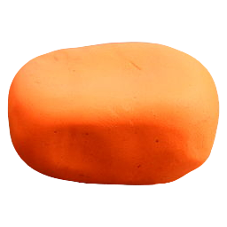

Miami, FL - 2001 (1 yr)
I was in the on-air promotions dept. making "bumpers" (All that fun crazy stuff between the show and the commercial.) Each day I'd get get poached by a producer and make anything needed, usually a concept-to-completion 10 or 20 second spot needed within 24 hours to fill broadcast gaps.
The first 3 months were an internship. (I was the only sophmore to land one) I was hired immediately afterwards and worked my way through college here. It was the enterence into the industry. Pure creativity. I felt like the kid always picked first in the playground.
Tools
 Maya
Maya Photoshop
Photoshop Illustrator
Illustrator After Effects
After Effects- Stop Motion
-  Claymation
Creative Process
Quick turnaround 3D was very new for broadcast TV. It really was as simple as pencil sketching key frames, presenting the producer for feedback, notifying the sound guy, and getting to work.
My Maya knowledge was the most valuable asset I brought to the table, and I also became an After Effects expert working here.
Colaberating with experts in camera-based stopmotion, physical claymations, and practical effects was the experience of a lifetime.